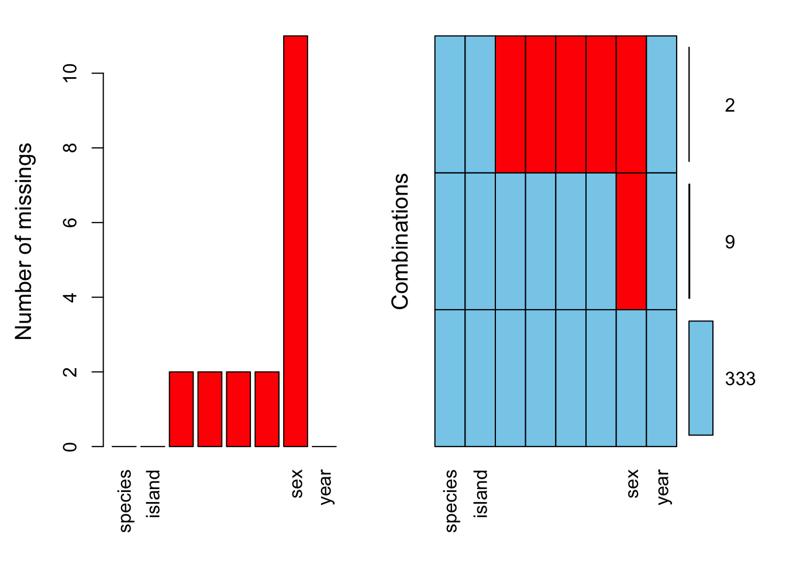
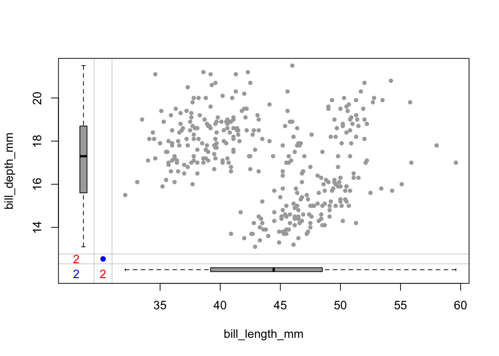
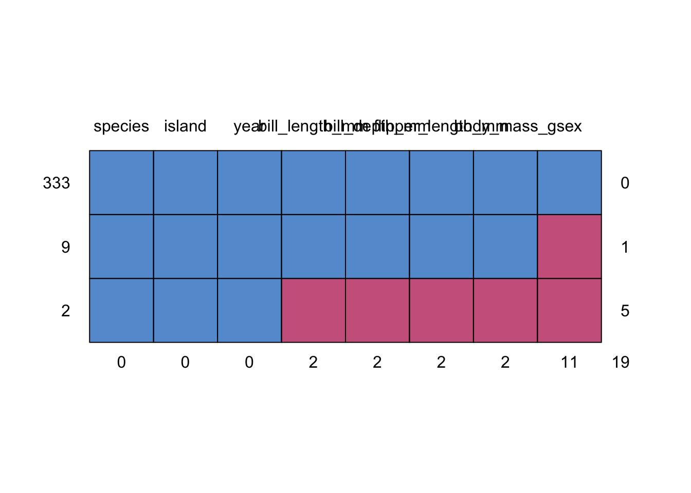

2 데이터 전처리
2.1 결측치 처리
결측치는 관측된 표본에서 누락된 값을 의미한다. 관측치의 종류에서 다음과 같다.

결측치 종류
2.1.1 결측치 확인
결측치를 확인하는 방법은 여러가지가 있으나 is.na() 함수나 summary() 함수를 통해 가능하다.
## species island bill_length_mm bill_depth_mm
## Adelie :152 Biscoe :168 Min. :32.10 Min. :13.10
## Chinstrap: 68 Dream :124 1st Qu.:39.23 1st Qu.:15.60
## Gentoo :124 Torgersen: 52 Median :44.45 Median :17.30
## Mean :43.92 Mean :17.15
## 3rd Qu.:48.50 3rd Qu.:18.70
## Max. :59.60 Max. :21.50
## NA's :2 NA's :2
## flipper_length_mm body_mass_g sex year
## Min. :172.0 Min. :2700 female:165 Min. :2007
## 1st Qu.:190.0 1st Qu.:3550 male :168 1st Qu.:2007
## Median :197.0 Median :4050 NA's : 11 Median :2008
## Mean :200.9 Mean :4202 Mean :2008
## 3rd Qu.:213.0 3rd Qu.:4750 3rd Qu.:2009
## Max. :231.0 Max. :6300 Max. :2009
## NA's :2 NA's :2## species island bill_length_mm bill_depth_mm
## 0 0 2 2
## flipper_length_mm body_mass_g sex year
## 2 2 11 0VIM 패키지 aggr() 함수를 사용하면 결측치를 시각화 할 수 있다.


mice 패키지 md.pattern() 함수를 이용해서도 결측치를 확인할 수 있다.

## species island year bill_length_mm bill_depth_mm flipper_length_mm
## 333 1 1 1 1 1 1
## 9 1 1 1 1 1 1
## 2 1 1 1 0 0 0
## 0 0 0 2 2 2
## body_mass_g sex
## 333 1 1 0
## 9 1 0 1
## 2 0 0 5
## 2 11 192.1.2 결측치 제거
결측치가 변수가 영향이 없고 표본 크기가 충분히 크다면 간단히 제거함으로써 데이터를 정제할 수 있다.
penguins.naomit1 <- na.omit(penguins); penguins.naomit2 <- na.omit(penguins);
rbind(penguins.naomit1 = colSums(is.na(penguins.naomit1)),
penguins.naomit2 = colSums(is.na(penguins.naomit2)))## species island bill_length_mm bill_depth_mm flipper_length_mm
## penguins.naomit1 0 0 0 0 0
## penguins.naomit2 0 0 0 0 0
## body_mass_g sex year
## penguins.naomit1 0 0 0
## penguins.naomit2 0 0 02.1.3 결측치 대체
2.1.3.1 단순 대체
결측치를 하나의 값(0, 평균/중앙값 등)으로 대체하는 방법이다. 이 방법은 무작위적이지 않기 때문에 무작위 오차가 발생하지 않는다. 즉 누락된 데이터의 양이 많을수록 표준오차가 과소평가되고 변수들간의 상관관계에 영향을 주어 부정확한 p값을 산출하게 된다.
2.1.3.1.1 NA값을 제거하고 평균 계산
## bill_length_mm bill_depth_mm flipper_length_mm body_mass_g
## 43.92193 17.15117 200.91520 4201.754392.1.3.1.2 0으로 대체
## bill_length_mm bill_depth_mm flipper_length_mm body_mass_g
## 43.66657 17.05145 199.74709 4177.325582.1.3.1.3 평균으로 대체
p.mean <- as.data.frame(penguins[c(3:6)])
all_column_mean <- apply(p.mean, 2, mean, na.rm=T)
for(i in colnames(p.mean)) {
p.mean[is.na(p.mean[,i]), i] <- all_column_mean[i]
}
colMeans(p.mean)## bill_length_mm bill_depth_mm flipper_length_mm body_mass_g
## 43.92193 17.15117 200.91520 4201.754392.1.3.2 다중 대체
시뮬레이션을 통해 제시된 최적의 해로 대체한다. MICE와 `Amelia가 다중 대체법을 지원하는 대표적인 패키지이다.
##
## iter imp variable
## 1 1 bill_length_mm bill_depth_mm flipper_length_mm body_mass_g sex
## 2 1 bill_length_mm bill_depth_mm flipper_length_mm body_mass_g sex
## 3 1 bill_length_mm bill_depth_mm flipper_length_mm body_mass_g sex
## 4 1 bill_length_mm bill_depth_mm flipper_length_mm body_mass_g sex
## 5 1 bill_length_mm bill_depth_mm flipper_length_mm body_mass_g sex제거/대체를 통해 데이터 정제한 평균값 비교
rbind(
P.orig = colMeans(p, na.rm = T),
P.zero = colMeans(p.0),
P.mean = colMeans(p.mean),
p.mice = colMeans(p.mice.complete[c(3:6)])
)## bill_length_mm bill_depth_mm flipper_length_mm body_mass_g
## P.orig 43.92193 17.15117 200.9152 4201.754
## P.zero 43.66657 17.05145 199.7471 4177.326
## P.mean 43.92193 17.15117 200.9152 4201.754
## p.mice 43.92238 17.15145 200.9622 4203.416